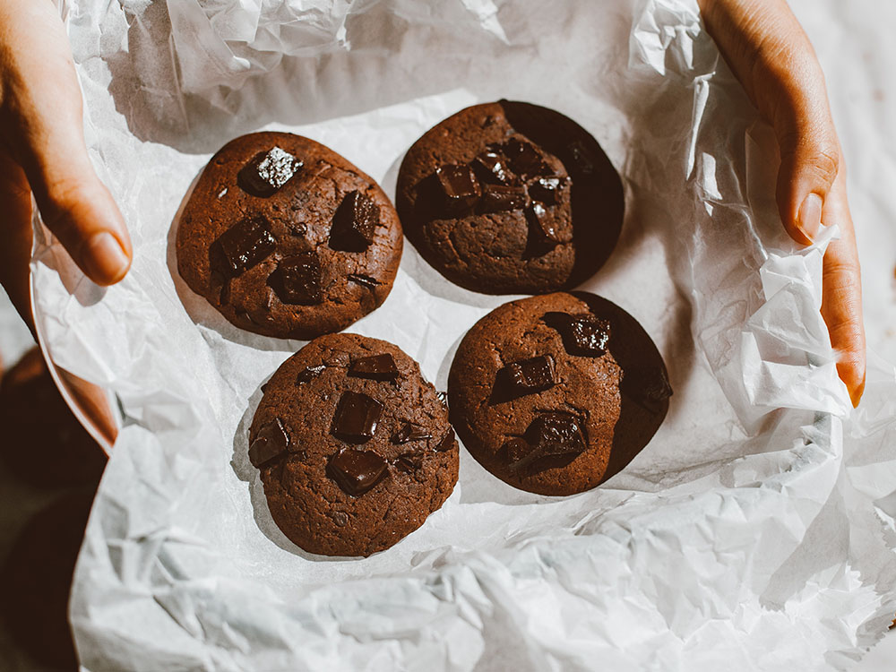

Chocolate cookies

These chocolate cookies are delicious and easy to make!
This recipe makes 48 cookies.
Ingredients
- 2 cups white sugar
- 1 and 1/4 cups margarine, softened
- 2 eggs
- 2 teaspoons vanilla extract
- 2 cups all-purpose flour
- 3/4 cup unsweetened cocoa powder
- 1 teaspoon baking soda
- 1/8 teaspoon salt
- 1 cup chopped walnuts
Steps
- Preheat the oven to 180 degrees C.
- Cream sugar and margarine in a large bowl until light and
fluffy. Beat in eggs, one at a time, then stir in vanilla.
- Combine flour, cocoa, baking soda, and salt in a separate
bowl. Add to the creamed mixture and mix until just blended.
Stir in walnuts. Drop by spoonfuls onto ungreased
cookie sheets.
- Bake in the preheated oven until edges are set and centers
are soft, 8 to 10 minutes. Let sit briefly before
transferring to wire racks to cool completely.